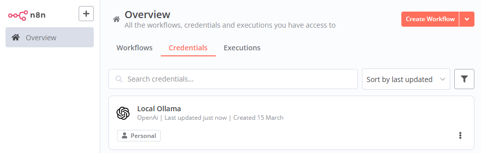
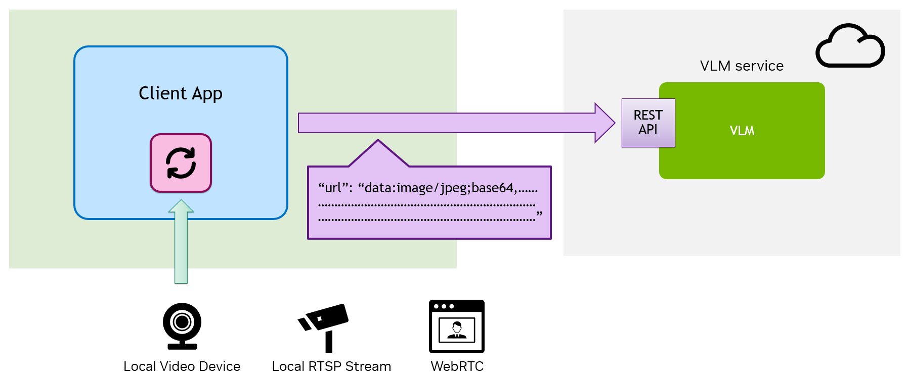
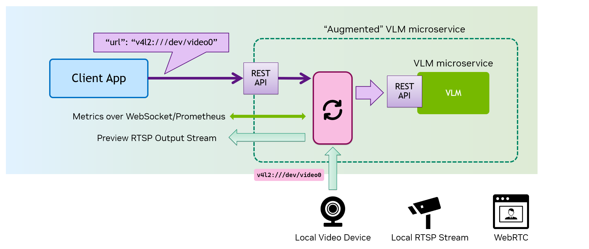

Local VLM Microservices
Local VLM (Vision Language Model) microservices can unlock a new class of applications for VLMs at the edge, as it can enable capabilities and performance that cloud-hosted VLMs cannot achieve, especially when integrated with local live video sources.
In this module, we
- first look at the example of local VML microservices and its applications, and then
- experiment with the "Augmented" VLM Microservice that enables the efficient local video source ingestion and explore the applications.
1. Local VLM Microservices
Gemma-3-4b on Ollama
Google launched Gemma 3 in March 2025, introducing multimodal support for models with over 4 billion parameters, enabling vision input alongside text processing.
Let's run the 4B model using Ollama.
docker run -it --rm \
--gpus all --network=host \
-e OLLAMA_HOST="0.0.0.0:9000" \
-e OLLAMA_MODEL=gemma3:4b \
-e OLLAMA_CONTEXT_LENGTH=4096 \
-e OLLAMA_LOGS=/root/.ollama/ollama.log \
-v /mnt/nvme/cache:/root/.cache \
-v /mnt/nvme/cache/ollama:/root/.ollama \
dustynv/ollama:main-r36.4.0
Note
This assumes you have installed ollama natively on your Jetson, as shown in this tutorial section.
ollama run gemma3:4b
LLM - Text-only
Curl Request with Text-only
You can reuse the curl command we used in the earlier tutorial.
curl http://0.0.0.0:9000/v1/chat/completions \
-H "Content-Type: application/json" \
-d '{
"messages": [
{
"role": "system",
"content": "You are a helpful assistant."
},
{
"role": "user",
"content": "Hello!"
}
]
}'
You will see a response something like this.
{
"id": "chatcmpl-44f2b0d94e0e444e9fcdacfbe38728fc",
"object": "chat.completion",
"created": 1742065798,
"model": "google/gemma-3-4b-it",
"choices": [
{
"index": 0,
"message": {
"role": "assistant",
"reasoning_content": null,
"content": "Hello there! How can I help you today? üòä \n\nDo you need me to:\n\n* Answer a question?\n* Brainstorm ideas?\n* Write something?\n* Just chat?\n\nLet me know what's on your mind!",
"tool_calls": []
},
"logprobs": null,
"finish_reason": "stop",
"stop_reason": 106
}
],
"usage": {
"prompt_tokens": 18,
"total_tokens": 75,
"completion_tokens": 57,
"prompt_tokens_details": null
},
"prompt_logprobs": null
}
VLM - With Image
The "Vision API"
OpenAI API Doc shows how to use the vision capabilities through their API. This works with Ollama as well.
You make the request to the same /v1/chat/completions endpoint, and provide extra image information, either by putting a URL for an image file or by providing an image as a Base64-encoded data.

Curl Request with Image
You can test the curl commands in both styles against Ollama server.
You will see the response that shows that it processed the passed or encoded image.
curl --location --request POST http://0.0.0.0:9000/v1/chat/completions \
--header "Content-Type: application/json" \
--data '{
"messages": [
{
"role": "user",
"content": [
{
"type": "text",
"text": "What is in this image?"
},
{
"type": "image_url",
"image_url": {
"url": "https://upload.wikimedia.org/wikipedia/commons/thumb/d/dd/Gfp-wisconsin-madison-the-nature-boardwalk.jpg/2560px-Gfp-wisconsin-madison-the-nature-boardwalk.jpg"
}
}
]
}
],
"max_tokens": 300
}'
Example response
{
"id": "chatcmpl-7055ee78ebd64a7895bdf9a5e22e495e",
"object": "chat.completion",
"created": 1742067887,
"model": "google/gemma-3-4b-it",
"choices": [
{
"index": 0,
"message": {
"role": "assistant",
"reasoning_content": null,
"content": "Here's a breakdown of what's in the image:\n\n* **Wooden boardwalk:** A long, wooden walkway stretches into the image, leading into the grassy field.\n* **Tall grass and reeds:** The foreground is dominated by very tall, green grass and reeds, creating a lush, natural environment.\n* **Field/Wetland:** The boardwalk leads into a wide field, which appears to be a wetland or marsh area.\n* **Trees and shrubs:** A line of trees and shrubs forms the distant horizon.\n* **Sky:** A vibrant blue sky filled with fluffy white clouds.\n\nOverall, it’s a beautiful landscape shot of a serene wetland area, likely a nature preserve or park, with a boardwalk providing access to the area.",
"tool_calls": []
},
"logprobs": null,
"finish_reason": "stop",
"stop_reason": 106
}
],
"usage": {
"prompt_tokens": 275,
"total_tokens": 435,
"completion_tokens": 160,
"prompt_tokens_details": null
},
"prompt_logprobs": null
}
curl --location --request POST 'http://0.0.0.0:9000/v1/chat/completions' \
--header 'Content-Type: application/json' \
--data '{
"messages": [
{
"role": "user",
"content": [
{
"type": "text",
"text": "Describe this icon."
},
{
"type": "image_url",
"image_url": {
"url": ""
}
}
]
}
],
"max_tokens": 128
}'
Example response
{
"id": "chatcmpl-76126099d5ea4560b32ddc74a307a210",
"object": "chat.completion",
"created": 1742068087,
"model": "google/gemma-3-4b-it",
"choices": [
{
"index": 0,
"message": {
"role": "assistant",
"reasoning_content": null,
"content": "Okay, here’s a description of the icon:\n\nIt’s a stylized white \"H\" on a solid red background. The \"H\" appears to have a slight glow or halo effect around it, and it’s somewhat blurred or hazy, giving it a soft, diffused look. \n\nBased on this, it’s most likely the icon for **HBO** (Home Box Office), the television network.",
"tool_calls": []
},
"logprobs": null,
"finish_reason": "stop",
"stop_reason": 106
}
],
"usage": {
"prompt_tokens": 281,
"total_tokens": 368,
"completion_tokens": 87,
"prompt_tokens_details": null
},
"prompt_logprobs": null
}
Python Examples
As demonstrated on the OpenAI Doc page, you can do the same with Python scripts.
Note
Make sure you have installed openai Python library.
pip install openai
from openai import OpenAI
client = OpenAI(
base_url = os.environ.get('OPENAI_BASE_URL', 'http://0.0.0.0:9000/v1'),
api_key = 'foo',
)
response = client.chat.completions.create(
model="google/gemma-3-4b-it",
messages=[{
"role": "user",
"content": [
{"type": "text", "text": "What's in this image?"},
{
"type": "image_url",
"image_url": {
"url": "https://upload.wikimedia.org/wikipedia/commons/thumb/d/dd/Gfp-wisconsin-madison-the-nature-boardwalk.jpg/2560px-Gfp-wisconsin-madison-the-nature-boardwalk.jpg",
},
},
],
}],
)
print(response.choices[0].message.content)
import os, requests, base64
from openai import OpenAI
client = OpenAI(
base_url = os.environ.get('OPENAI_BASE_URL', 'http://0.0.0.0:9000/v1'),
api_key = 'foo',
)
# Function to encode the image
def encode_image(url, toBase64=True):
""" Download + convert to base64, or pass through as image_url """
if not toBase64:
return url
response = requests.get(url)
if response.status_code != 200:
raise ValueError(f"Failed to fetch image: {url} (HTTP {response.status_code})")
content_type = response.headers.get('Content-Type', 'image/jpeg') # Default to JPEG
return f"data:{content_type};base64,{base64.b64encode(response.content).decode()}"
# Path to your image
image_base_url = 'https://raw.githubusercontent.com/dusty-nv/jetson-containers/refs/heads/dev/data/images/hoover.jpg'
# Getting the Base64 string
base64_image = encode_image(image_base_url)
completion = client.chat.completions.create(
model="google/gemma-3-4b-it",
messages=[{
"role": "user",
"content": [
{ "type": "text", "text": "what's in this image?" },
{
"type": "image_url",
"image_url": {
"url": base64_image,
},
},
],
}],
)
print(completion.choices[0].message.content)
VLM usage in frameworks
Open WebUI
Let's take a look at how this VLM capability can be used in Open WebUI
-
As shown in the earlier tutorial, launch the Open WebUI server.
docker runcommand to start Open WebUI serverdocker run -it --rm \ --name open-webui \ --network=host \ -e PORT=8080 \ -e ENABLE_OPENAI_API=True \ -e ENABLE_OLLAMA_API=False \ -e OPENAI_API_BASE_URL=http://0.0.0.0:9000/v1 \ -e OPENAI_API_KEY=foo \ -e AUDIO_STT_ENGINE=openai \ -e AUDIO_TTS_ENGINE=openai \ -e AUDIO_STT_OPENAI_API_BASE_URL=http://0.0.0.0:8990/v1 \ -e AUDIO_TTS_OPENAI_API_BASE_URL=http://0.0.0.0:8995/v1 \ -v /mnt/nvme/cache/open-webui:/app/backend/data \ -e DOCKER_PULL=always --pull always \ -e HF_HUB_CACHE=/root/.cache/huggingface \ -v /mnt/nvme/cache:/root/.cache \ ghcr.io/open-webui/open-webui:main -
On a web browser on a PC (that is on the same network as Jetson), access
http://<JETSON_IP>:8080/ -
Go through the sign-in process
-
In the chat box, click on (plus) icon and select " Upload Files", and attach a local image.
-
Supply a text query (e.g. "Describe this image.") and hit "(Send message)" button.

-
Check the response.

-
Check the log on terminal running Ollama
You may find information like following.
INFO 03-15 20:57:25 [logger.py:39] Received request chatcmpl-ffb41435ad4a4bb990b48ecc341850a9: prompt: '<bos><start_of_turn>user\n### Task:\nGenerate 1-3 broad tags categorizing the main themes of the chat history, along with 1-3 more specific subtopic tags.\n\n### Guidelines:\n- Start with high-level domains (e.g. Science, Technology, Philosophy, Arts, Politics, Business, Health, Sports, Entertainment, Education)\n- Consider including relevant subfields/subdomains if they are strongly represented throughout the conversation\n- If content is too short (less than 3 messages) or too diverse, use only ["General"]\n- Use the chat\'s primary language; default to English if multilingual\n- Prioritize accuracy over specificity\n\n### Output:\nJSON format: { "tags": ["tag1", "tag2", "tag3"] }\n\n### Chat History:\n<chat_history>\nUSER: Describe the photo.\nASSISTANT: Here\'s a description of the photo:\n\nThe photo showcases a large, full moon dominating the frame. It is a vibrant, creamy white color, with prominent and detailed dark grey and brown craters, maria (smooth, dark plains formed by ancient lava flows), and highlands visible across its surface. \n\nThe background is a solid, dark black, which makes the moon stand out dramatically and emphasizes its round shape. It appears to be a close-up shot, giving a clear and detailed view of the lunar surface.\n</chat_history><end_of_turn>\n<start_of_turn>model\n', params: SamplingParams(n=1, presence_penalty=0.0, frequency_penalty=0.0, repetition_penalty=1.0, temperature=1.0, top_p=1.0, top_k=-1, min_p=0.0, seed=None, stop=[], stop_token_ids=[], bad_words=[], include_stop_str_in_output=False, ignore_eos=False, max_tokens=7890, min_tokens=0, logprobs=None, prompt_logprobs=None, skip_special_tokens=True, spaces_between_special_tokens=True, truncate_prompt_tokens=None, guided_decoding=None, extra_args=None), prompt_token_ids: None, lora_request: None, prompt_adapter_request: None. INFO 03-15 20:57:25 [engine.py:289] Added request chatcmpl-ffb41435ad4a4bb990b48ecc341850a9. INFO: 172.17.0.1:42452 - "POST /v1/chat/completions HTTP/1.1" 200 OK INFO 03-15 20:57:36 [metrics.py:481] Avg prompt throughput: 48.7 tokens/s, Avg generation throughput: 4.1 tokens/s, Running: 0 reqs, Swapped: 0 reqs, Pending: 0 reqs, GPU KV cache usage: 0.0%, CPU KV cache usage: 0.0%. INFO 03-15 20:57:46 [metrics.py:481] Avg prompt throughput: 0.0 tokens/s, Avg generation throughput: 0.0 tokens/s, Running: 0 reqs, Swapped: 0 reqs, Pending: 0 reqs, GPU KV cache usage: 0.0%, CPU KV cache usage: 0.0%.
n8n
n8n is a powerful open-source workflow automation tool that enables seamless integration between various applications, APIs, and services -- making it an excellent choice for orchestrating LLMs and VLMs, edge AI deployments, and local AI-powered workflows.
-
Start n8n server container
- Go to Models section of Jetson AI Lab
- Go to Web UI section, and click "n8n" card
- Check the parameter, change as needed, and click on the ("Copy to clipboard") icon in the code snippet under the "Docker Run" section
- Note the "Server IP / Port" section. The default is
0.0.0.0:5678.
- Note the "Server IP / Port" section. The default is
-
Paste the
docker runcommand in Jetson terminal and executedocker run -it --rm --name=n8n \ --network=host \ -e N8N_LISTEN_ADDRESS=0.0.0.0 \ -e N8N_PORT=5678 \ -e N8N_SECURE_COOKIE=false \ -v /mnt/nvme/cache/n8n:/root/node/.n8n \ -e DOCKER_PULL=always --pull always \ -e HF_HUB_CACHE=/root/.cache/huggingface \ -v /mnt/nvme/cache:/root/.cache \ n8nio/n8n:stable -
On a web browser on a PC (that is on the same network as Jetson), access
http://<JETSON_IP>:5678/
-
First create a "Credential" to configure the connection to the local Ollama server.
- On the n8n top screen, click on "" button on the left, and select "Credential".
- In the "Add new credential" prompt box, in the "Search for app..." field, type "openai" and select "OpenAi". Hit "Continue" button.
-
In the "OpenAi account" prompt box, put the followings;
Field Value API Key foo(or whatever random)Organization ID (leave it blank)Base URL http://0.0.0.0:9000/v1 -
Once done, hit "Save" button. Check you get " Connection tested successfully" message.

-
Put your mouse cursor over the text "OpenAi account" at the top of the prompt box
- " (Edit)" icon shows up, so click on it to edit, and name is something like "Local Ollama".
-
Click icon on the top left corner of the prompt box to close

-
Then create a "Workflow" to use the "OpenAI Analyze Image" node to use gemma-3-4b model hosted on Ollama
- On the n8n top screen, click on "" button on the left, and select "Workflow".
- Click on "Add first step..." button in the center
- In the right side pane that shows up, in the field "Search for app..." field, type "openai" and select "OpenAI", the first item.
- Under the "Actions (15)" section, under "IMAGE ACTION" category, find and select "Analyze Image"
-
In the "OpenAi account" prompt box, under the "Parameters" tab, put the followings;
Field Value Note Credential to connect with "Local Ollama" (or whatever credential you created and named) Resource Image (default) Operation Analyze Image (default) Model Specify Method By ID Model google/gemma-3-4b-it(Ollama cares this field, so you need to supply the correct name of the model) Text Input "What's in this image" (default) Input Type Image URL(s) (default) URL https://raw.githubusercontent.com/dusty-nv/jetson-containers/refs/heads/dev/data/images/hoover.jpg -
Click "Test step" button the top right of the prompt box, and check the output shown on the right.

2. Augmented VLM Microservice
Challenges with Local Video Source
A VLM is powerful, but processing a continuous local video stream with it can be complex. Traditional methods require the client to extract frames from the local video source/device, encode them, and send the data over API requests -- adding unnecessary overhead and latency.
Solution
An "Augmented VLM Microservice" eliminates this complexity by internalizing video source management.
Instead of handling frame extraction and encoding, the client can simply point to the video source, letting the microservice handle everything internally and efficiently. Additionally, it can provide optional output streams and useful metrics, making integration with applications seamless and efficient.
This approach reduces client-side complexity, enhances real-time processing, and improves overall performance for edge AI applications. üöÄ

Your client application is responsible for managing the video source, extracting the frame.
The API request includes the Base64-encoded image, adding overhead and latency.
Even when you have a local VLM Microservice, your client application is still responsible for managing the video source, extracting the frame.

The Augmented VLM Microservice internalizes the video source management and frame processing, allowing your client application to only point to the video source and keeping itself simple.

The Augmented VLM Microservice can optionally produces output/preview video stream and other useful metrics.
Example - VILA Microservice
Let's take a look at an example augmented VLM microservice, VILA Microservice, which is based on VILA 1.5 - 3B.
Note
This section assumes you have installed jetson-containers.
git clone https://github.com/dusty-nv/jetson-containers
bash ./jetson-containers/install.sh
-
Prepare a video source
Before starting the VILA Microservice container using
jetson-containers, first hook up a USB webcam to your Jetson.
Make sure it shows up onls /dev/video*.Follow this instruction to install
nvstream, start its container, and upload an MP4 video file to start streaming over RTSP. -
Start VILA Microservice container
jetson-containers run dustynv/vila-microservice:r36.4.0 -
Start n8n server
Follow the instruction above.
-
Make sure you have the credential for
http://0.0.0.0:9000/v1You can keep using the credential you made of Ollama as we kept the base URL (and the API scheme) same.
You can also create a dedicated credential for VILA Microservice (in case you customize the port number, etc). -
Create a "Workflow" like before, but be sure to specify your video source in URL field.
Field Value Note Credential to connect with "Local Ollama" Or the one you made for VILA Microservice Resource Image (default) Operation Analyze Image (default) Model Specify Method By IDModel Efficient-Large-Model/VILA1.5-3bVILA Microservice does not check this Text Input "What's in this image" (default) Input Type Image URL(s) (default) URL v4l2:///dev/video0Field Value Note Credential to connect with "Local Ollama" Or the one you made for VILA Microservice Resource Image (default) Operation Analyze Image (default) Model Specify Method By IDModel Efficient-Large-Model/VILA1.5-3bVILA Microservice does not check this Text Input "What's in this image" (default) Input Type Image URL(s) (default) URL rtsp://<JETSON_IP>/<PATH_TO_VIDEO_FILE>(e.g. rtsp://10.110.51.72:31554/nvstream/opt/store/nvstreamer_videos/sample_1080p_h264.mp4) -
Click "Test step" button the top right of the prompt box, and check the output shown on the right.
-
Open "VLC". From "Media" menu, select "Open Network Stream...", input the address in the following format, and hit "Play" button
rtsp://<JETSON_IP>:5011/out
-
Try sending another API request by hitting "Test step" button on n8n.
Notice the overlay on the video showing the prompt and response changes (and fade away).
-
If you have multiple video source ready, change the URL field, and hit "Test step" button again.
Notice the stream changes to the new input you specify.